The data for this exercise were collected for an experiment to test the toxicity of different chemicals at various concentrations to a species of mite. The aim was to determine whether the proportion of mites surviving was related to the concentration of the chemical and whether this relationship depended on the type of chemical the mites were exposed to. We will be using a binomial GLM again for this example, but this time we will be using it to model proportion data, from counts of “successes” (= mite survival, unless you don’t like mites), and “failures” (= mite death).
ID index of the observationsConcentration: Concentration of the chemicalToxic: Chemical typeDead_mites: Number of dead mites in assayTotal: Initial number of mites in assayProportion= Dead_mites / Total
As in previous exercises, either create a new R script (perhaps call it GLM_BinomProps) or continue with your previous R script in your RStudio Project. Again, make sure you include any metadata you feel is appropriate (title, description of task, date of creation etc) and don’t forget to comment out your metadata with a # at the beginning of the line.
1. Import the data file ‘DrugsMites.txt’ into R. We want to model the variable Toxic as a categorical predictor with 4 levels, so create a new variable with Toxic as a factor.
Mites<- read.delim("./data/DrugsMites.txt")
str(Mites)
## 'data.frame': 115 obs. of 6 variables:
## $ ID : int 1 2 3 4 5 6 7 8 9 10 ...
## $ Concentration: num 0 0 0 0 0 0.25 0.25 0.25 0.25 0.25 ...
## $ Toxic : int 1 1 1 1 1 1 1 1 1 1 ...
## $ Dead_mites : int 0 0 1 0 0 2 1 3 2 1 ...
## $ Total : int 4 4 4 4 4 4 4 4 4 4 ...
## $ Proportion : num 0 0 0.25 0 0 0.5 0.25 0.75 0.5 0.25 ...
Mites$fToxic<- factor(Mites$Toxic)
str(Mites)
## 'data.frame': 115 obs. of 7 variables:
## $ ID : int 1 2 3 4 5 6 7 8 9 10 ...
## $ Concentration: num 0 0 0 0 0 0.25 0.25 0.25 0.25 0.25 ...
## $ Toxic : int 1 1 1 1 1 1 1 1 1 1 ...
## $ Dead_mites : int 0 0 1 0 0 2 1 3 2 1 ...
## $ Total : int 4 4 4 4 4 4 4 4 4 4 ...
## $ Proportion : num 0 0 0.25 0 0 0.5 0.25 0.75 0.5 0.25 ...
## $ fToxic : Factor w/ 4 levels "1","2","3","4": 1 1 1 1 1 1 1 1 1 1 ...
2. Perform the usual graphical data exploration, looking for outliers, relationships between predictors, and between response and predictors etc. You can use the variable Proportion in the data frame for these plots.
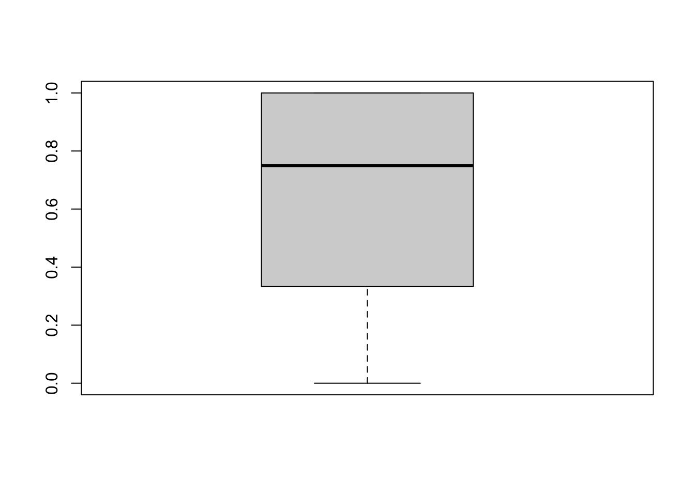
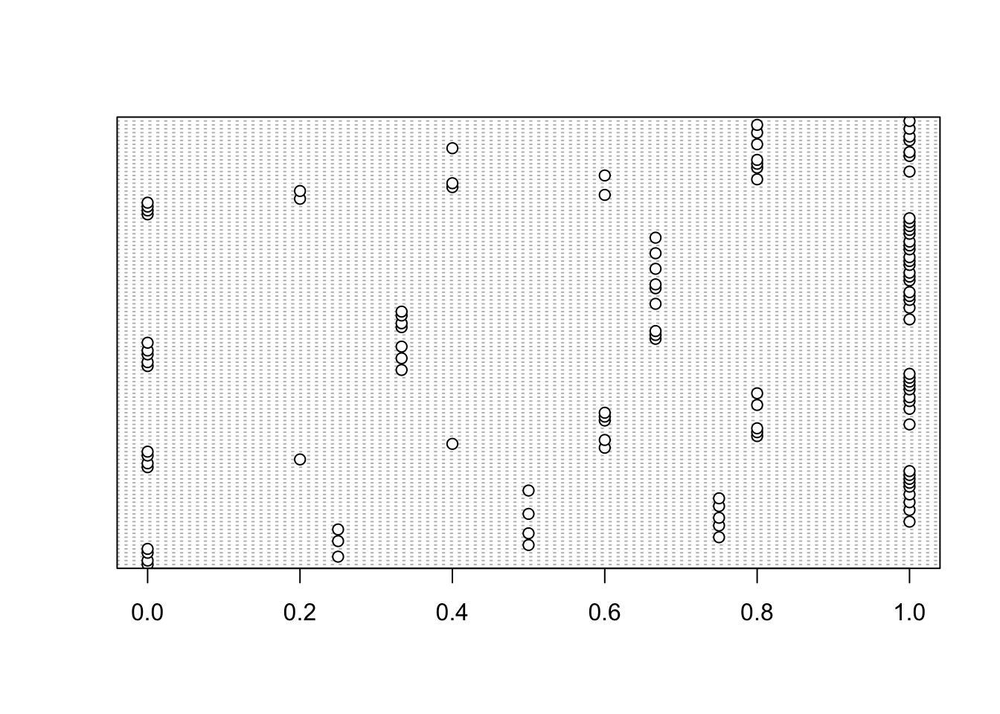
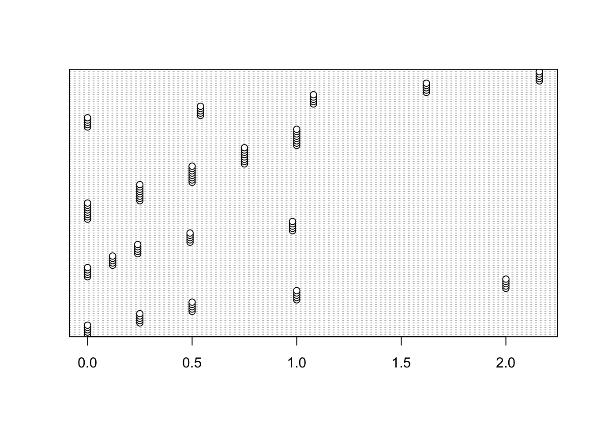
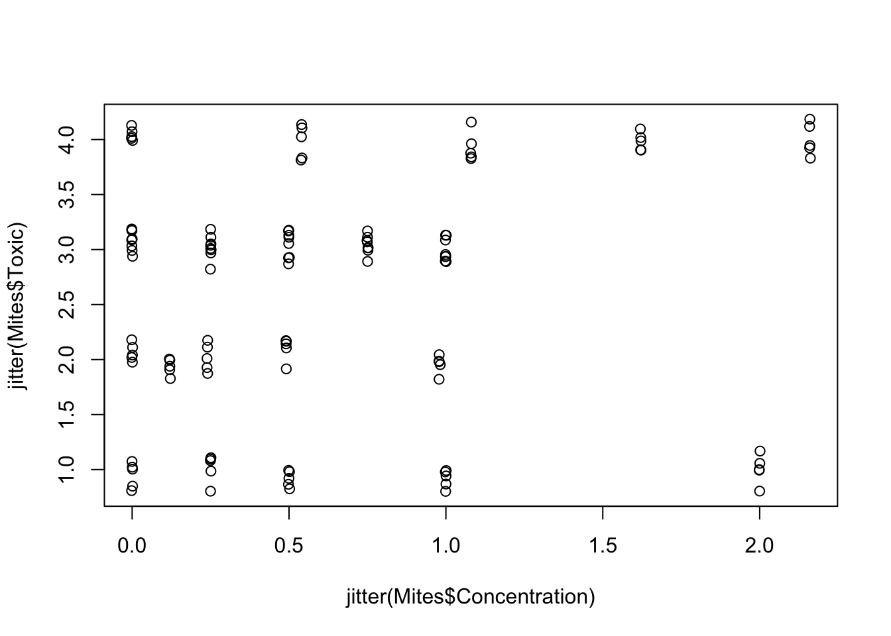
# Toxics 2 and 3 have not been assayed at the highest concentrations
# but have had more trials at the lower concentrations
# Relationships
boxplot(Proportion ~ Toxic, data= Mites)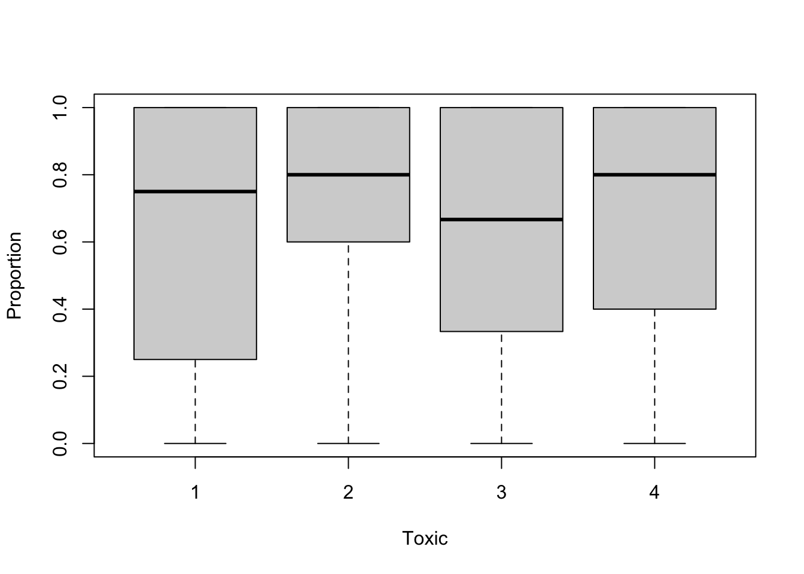
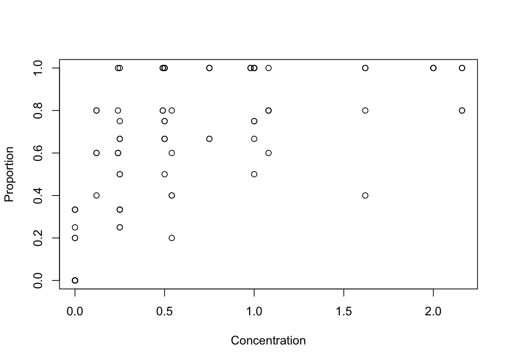
# Since lots of proportions have the same values, we can also add
# a bit of noise to the coordinates in the previous plot, to limit overlap:
with(Mites, plot(x= jitter(Concentration), y= jitter(Proportion)))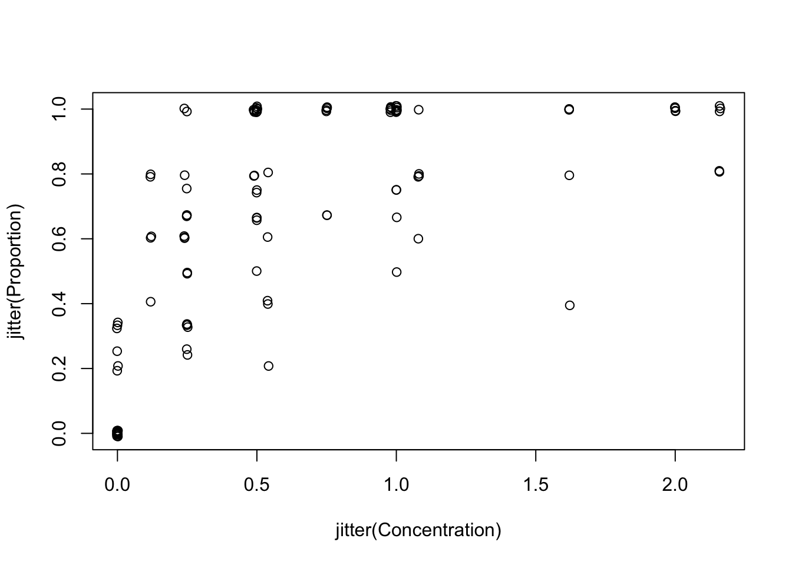
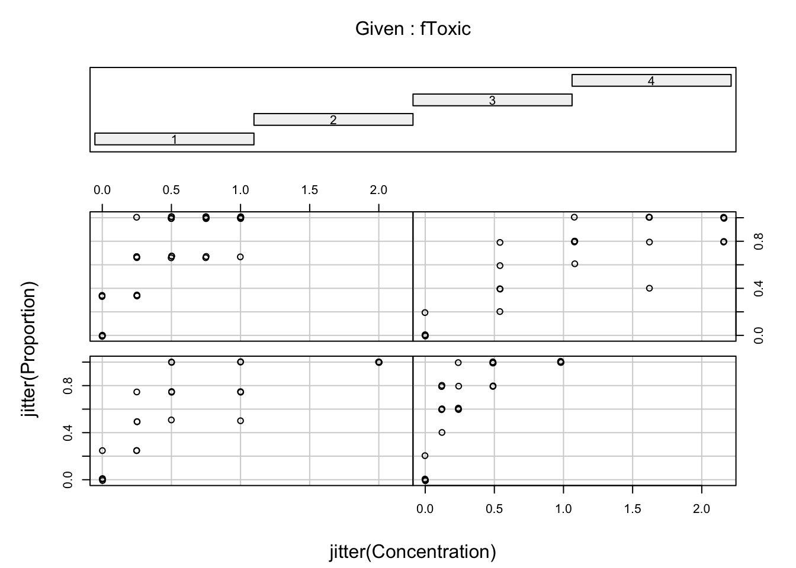
# looks like researchers stopped increasing concentration of a chemical when they had
# reached ~ 100 % mortality in assays
3. In order to model the proportion of mites surviving, create a new variable (called something creative like Living_mites for example) representing the number of surviving mites by differencing the two variables Dead_mites and Total.
4. We can now use this new variable when specifying a binomial GLM. Recall from the lecture that the response variable should be a data frame consisting of two columns, cbind(Living_mites, Dead_mites). Ask if in doubt. If you hate mites you could also swap the order of the two columns: you would then be modelling the proportion that die.
M1<- glm(cbind(Living_mites, Dead_mites) ~ Concentration + fToxic + Concentration : fToxic, family= binomial, data= Mites)
M1<- glm(cbind(Living_mites, Dead_mites) ~ Concentration * fToxic, family= binomial, data= Mites)
5. Obtain summaries of the model output using the summary() function. Make sure you understand the mathematical and biological interpretation of the model, by writing down the complete model on paper (with distribution and link function). What biological hypothesis does each term imply, qualitatively?
summary(M1)
##
## Call:
## glm(formula = cbind(Living_mites, Dead_mites) ~ Concentration *
## fToxic, family = binomial, data = Mites)
##
## Deviance Residuals:
## Min 1Q Median 3Q Max
## -2.0569 -0.5875 -0.1295 0.7435 2.6011
##
## Coefficients:
## Estimate Std. Error z value Pr(>|z|)
## (Intercept) 1.43483 0.41664 3.444 0.000574 ***
## Concentration -3.80101 0.87479 -4.345 1.39e-05 ***
## fToxic2 0.00860 0.57713 0.015 0.988111
## fToxic3 0.01419 0.58714 0.024 0.980717
## fToxic4 0.27387 0.58485 0.468 0.639594
## Concentration:fToxic2 -6.17647 2.28823 -2.699 0.006950 **
## Concentration:fToxic3 -1.89983 1.36204 -1.395 0.163062
## Concentration:fToxic4 1.48275 0.96299 1.540 0.123626
## ---
## Signif. codes: 0 '***' 0.001 '**' 0.01 '*' 0.05 '.' 0.1 ' ' 1
##
## (Dispersion parameter for binomial family taken to be 1)
##
## Null deviance: 342.07 on 114 degrees of freedom
## Residual deviance: 117.67 on 107 degrees of freedom
## AIC: 231.43
##
## Number of Fisher Scoring iterations: 6
coef(M1)
## (Intercept) Concentration fToxic2 fToxic3 fToxic4 Concentration:fToxic2
## 1.434827258 -3.801011714 0.008599625 0.014191002 0.273864642 -6.176473370
## Concentration:fToxic3 Concentration:fToxic4
## -1.899832702 1.482751939
model.matrix(M1)
## (Intercept) Concentration fToxic2 fToxic3 fToxic4 Concentration:fToxic2 Concentration:fToxic3 Concentration:fToxic4
## 1 1 0.00 0 0 0 0.00 0.00 0.00
## 2 1 0.00 0 0 0 0.00 0.00 0.00
## 3 1 0.00 0 0 0 0.00 0.00 0.00
## 4 1 0.00 0 0 0 0.00 0.00 0.00
## 5 1 0.00 0 0 0 0.00 0.00 0.00
## 6 1 0.25 0 0 0 0.00 0.00 0.00
## 7 1 0.25 0 0 0 0.00 0.00 0.00
## 8 1 0.25 0 0 0 0.00 0.00 0.00
## 9 1 0.25 0 0 0 0.00 0.00 0.00
## 10 1 0.25 0 0 0 0.00 0.00 0.00
## 11 1 0.50 0 0 0 0.00 0.00 0.00
## 12 1 0.50 0 0 0 0.00 0.00 0.00
## 13 1 0.50 0 0 0 0.00 0.00 0.00
## 14 1 0.50 0 0 0 0.00 0.00 0.00
## 15 1 0.50 0 0 0 0.00 0.00 0.00
## 16 1 1.00 0 0 0 0.00 0.00 0.00
## 17 1 1.00 0 0 0 0.00 0.00 0.00
## 18 1 1.00 0 0 0 0.00 0.00 0.00
## 19 1 1.00 0 0 0 0.00 0.00 0.00
## 20 1 1.00 0 0 0 0.00 0.00 0.00
## 21 1 2.00 0 0 0 0.00 0.00 0.00
## 22 1 2.00 0 0 0 0.00 0.00 0.00
## 23 1 2.00 0 0 0 0.00 0.00 0.00
## 24 1 2.00 0 0 0 0.00 0.00 0.00
## 25 1 2.00 0 0 0 0.00 0.00 0.00
## 26 1 0.00 1 0 0 0.00 0.00 0.00
## 27 1 0.00 1 0 0 0.00 0.00 0.00
## 28 1 0.00 1 0 0 0.00 0.00 0.00
## 29 1 0.00 1 0 0 0.00 0.00 0.00
## 30 1 0.00 1 0 0 0.00 0.00 0.00
## 31 1 0.12 1 0 0 0.12 0.00 0.00
## 32 1 0.12 1 0 0 0.12 0.00 0.00
## 33 1 0.12 1 0 0 0.12 0.00 0.00
## 34 1 0.12 1 0 0 0.12 0.00 0.00
## 35 1 0.12 1 0 0 0.12 0.00 0.00
## 36 1 0.24 1 0 0 0.24 0.00 0.00
## 37 1 0.24 1 0 0 0.24 0.00 0.00
## 38 1 0.24 1 0 0 0.24 0.00 0.00
## 39 1 0.24 1 0 0 0.24 0.00 0.00
## 40 1 0.24 1 0 0 0.24 0.00 0.00
## 41 1 0.49 1 0 0 0.49 0.00 0.00
## 42 1 0.49 1 0 0 0.49 0.00 0.00
## 43 1 0.49 1 0 0 0.49 0.00 0.00
## 44 1 0.49 1 0 0 0.49 0.00 0.00
## 45 1 0.49 1 0 0 0.49 0.00 0.00
## 46 1 0.98 1 0 0 0.98 0.00 0.00
## 47 1 0.98 1 0 0 0.98 0.00 0.00
## 48 1 0.98 1 0 0 0.98 0.00 0.00
## 49 1 0.98 1 0 0 0.98 0.00 0.00
## 50 1 0.98 1 0 0 0.98 0.00 0.00
## 51 1 0.00 0 1 0 0.00 0.00 0.00
## 52 1 0.00 0 1 0 0.00 0.00 0.00
## 53 1 0.00 0 1 0 0.00 0.00 0.00
## 54 1 0.00 0 1 0 0.00 0.00 0.00
## 55 1 0.00 0 1 0 0.00 0.00 0.00
## 56 1 0.00 0 1 0 0.00 0.00 0.00
## 57 1 0.00 0 1 0 0.00 0.00 0.00
## 58 1 0.00 0 1 0 0.00 0.00 0.00
## 59 1 0.25 0 1 0 0.00 0.25 0.00
## 60 1 0.25 0 1 0 0.00 0.25 0.00
## 61 1 0.25 0 1 0 0.00 0.25 0.00
## 62 1 0.25 0 1 0 0.00 0.25 0.00
## 63 1 0.25 0 1 0 0.00 0.25 0.00
## 64 1 0.25 0 1 0 0.00 0.25 0.00
## 65 1 0.25 0 1 0 0.00 0.25 0.00
## 66 1 0.25 0 1 0 0.00 0.25 0.00
## 67 1 0.50 0 1 0 0.00 0.50 0.00
## 68 1 0.50 0 1 0 0.00 0.50 0.00
## 69 1 0.50 0 1 0 0.00 0.50 0.00
## 70 1 0.50 0 1 0 0.00 0.50 0.00
## 71 1 0.50 0 1 0 0.00 0.50 0.00
## 72 1 0.50 0 1 0 0.00 0.50 0.00
## 73 1 0.50 0 1 0 0.00 0.50 0.00
## 74 1 0.50 0 1 0 0.00 0.50 0.00
## 75 1 0.75 0 1 0 0.00 0.75 0.00
## 76 1 0.75 0 1 0 0.00 0.75 0.00
## 77 1 0.75 0 1 0 0.00 0.75 0.00
## 78 1 0.75 0 1 0 0.00 0.75 0.00
## 79 1 0.75 0 1 0 0.00 0.75 0.00
## 80 1 0.75 0 1 0 0.00 0.75 0.00
## 81 1 0.75 0 1 0 0.00 0.75 0.00
## 82 1 0.75 0 1 0 0.00 0.75 0.00
## 83 1 1.00 0 1 0 0.00 1.00 0.00
## 84 1 1.00 0 1 0 0.00 1.00 0.00
## 85 1 1.00 0 1 0 0.00 1.00 0.00
## 86 1 1.00 0 1 0 0.00 1.00 0.00
## 87 1 1.00 0 1 0 0.00 1.00 0.00
## 88 1 1.00 0 1 0 0.00 1.00 0.00
## 89 1 1.00 0 1 0 0.00 1.00 0.00
## 90 1 1.00 0 1 0 0.00 1.00 0.00
## 91 1 0.00 0 0 1 0.00 0.00 0.00
## 92 1 0.00 0 0 1 0.00 0.00 0.00
## 93 1 0.00 0 0 1 0.00 0.00 0.00
## 94 1 0.00 0 0 1 0.00 0.00 0.00
## 95 1 0.00 0 0 1 0.00 0.00 0.00
## 96 1 0.54 0 0 1 0.00 0.00 0.54
## 97 1 0.54 0 0 1 0.00 0.00 0.54
## 98 1 0.54 0 0 1 0.00 0.00 0.54
## 99 1 0.54 0 0 1 0.00 0.00 0.54
## 100 1 0.54 0 0 1 0.00 0.00 0.54
## 101 1 1.08 0 0 1 0.00 0.00 1.08
## 102 1 1.08 0 0 1 0.00 0.00 1.08
## 103 1 1.08 0 0 1 0.00 0.00 1.08
## 104 1 1.08 0 0 1 0.00 0.00 1.08
## 105 1 1.08 0 0 1 0.00 0.00 1.08
## 106 1 1.62 0 0 1 0.00 0.00 1.62
## 107 1 1.62 0 0 1 0.00 0.00 1.62
## 108 1 1.62 0 0 1 0.00 0.00 1.62
## 109 1 1.62 0 0 1 0.00 0.00 1.62
## 110 1 1.62 0 0 1 0.00 0.00 1.62
## 111 1 2.16 0 0 1 0.00 0.00 2.16
## 112 1 2.16 0 0 1 0.00 0.00 2.16
## 113 1 2.16 0 0 1 0.00 0.00 2.16
## 114 1 2.16 0 0 1 0.00 0.00 2.16
## 115 1 2.16 0 0 1 0.00 0.00 2.16
## attr(,"assign")
## [1] 0 1 2 2 2 3 3 3
## attr(,"contrasts")
## attr(,"contrasts")$fToxic
## [1] "contr.treatment"
unique(model.matrix(M1))
## (Intercept) Concentration fToxic2 fToxic3 fToxic4 Concentration:fToxic2 Concentration:fToxic3 Concentration:fToxic4
## 1 1 0.00 0 0 0 0.00 0.00 0.00
## 6 1 0.25 0 0 0 0.00 0.00 0.00
## 11 1 0.50 0 0 0 0.00 0.00 0.00
## 16 1 1.00 0 0 0 0.00 0.00 0.00
## 21 1 2.00 0 0 0 0.00 0.00 0.00
## 26 1 0.00 1 0 0 0.00 0.00 0.00
## 31 1 0.12 1 0 0 0.12 0.00 0.00
## 36 1 0.24 1 0 0 0.24 0.00 0.00
## 41 1 0.49 1 0 0 0.49 0.00 0.00
## 46 1 0.98 1 0 0 0.98 0.00 0.00
## 51 1 0.00 0 1 0 0.00 0.00 0.00
## 59 1 0.25 0 1 0 0.00 0.25 0.00
## 67 1 0.50 0 1 0 0.00 0.50 0.00
## 75 1 0.75 0 1 0 0.00 0.75 0.00
## 83 1 1.00 0 1 0 0.00 1.00 0.00
## 91 1 0.00 0 0 1 0.00 0.00 0.00
## 96 1 0.54 0 0 1 0.00 0.00 0.54
## 101 1 1.08 0 0 1 0.00 0.00 1.08
## 106 1 1.62 0 0 1 0.00 0.00 1.62
## 111 1 2.16 0 0 1 0.00 0.00 2.16
## Mathematical model description:
# Prop_surviving ~ Binomial(Ntot, P)
# log(P / (1-P)) =
# 1.43 - 3.80*Concentration
# + 0.0085*fToxic2 + 0.014*fToxic3 + 0.27*fToxic4
# - 6.18*Concentration:fToxic2
# - 1.90*Concentration*fToxic3
# + 1.48*Concentration*fToxic4
## "biological" hypotheses:
# (Intercept): the mean (on the logit scale) for Toxic 1 when its
# concentration is 0 (null hypothesis not very useful, however
# the value is quite interesting, when back-transformed on the proportion
# scale: this is the proportion that survive the experiment in the absence
# of toxic chemical. Shouldn't differ between chemicals, presumably?)
# Concentration: slope of Concentration, or change in survival per unit
# increase in Toxic 1 concentration (on logit link), or change in log-odds
# of survival (on proportion scale)
# fToxic2: difference between intercepts of Toxic 2 and Toxic 1
# fToxic3: difference between intercepts of Toxic 3 and Toxic 1
# fToxic4: difference between intercepts of Toxic 4 and Toxic 1
# Concentration:fToxic2 difference between Conc. slopes for Toxic 2 and
# Toxic 1. Negative means a more lethal effect than Toxic 1
# Concentration:fToxic3 difference between Conc. slopes for Toxic 2 and Toxic 1
# Concentration:fToxic4 difference between Conc. slopes for Toxic 2 and Toxic 1
6. Do you need to check for overdispersion? If so, how do you do it?
# Yes, because this is a binomial variable with more than 1 trial per observation
# Residual deviance: 117.67 on 107 degrees of freedom
# -> negligible overdispersion
7. Do you need to perform model selection? What is the final model?
# we don't need to perform model selection here: given that the assay is
# to compare the effect of different chemicals, the interaction alone is the
# focus of the experiment. If it is not significant, we would have our answer
# and the simplified model wouldn't have much use.
drop1(M1, test= "Chi")
## Single term deletions
##
## Model:
## cbind(Living_mites, Dead_mites) ~ Concentration * fToxic
## Df Deviance AIC LRT Pr(>Chi)
## <none> 117.67 231.43
## Concentration:fToxic 3 145.86 253.62 28.189 3.315e-06 ***
## ---
## Signif. codes: 0 '***' 0.001 '**' 0.01 '*' 0.05 '.' 0.1 ' ' 1
# interaction is significant: we can reject the null hypothesis that there is
# no difference between chemicals.
8. Perform model validation: are you satisfied with the model?
library(car)
vif(M1)
## GVIF Df GVIF^(1/(2*Df))
## Concentration 10.00962 1 3.163798
## fToxic 18.28662 3 1.623139
## Concentration:fToxic 66.32618 3 2.011936
# extremely high VIF values: are they a problem?
# Not particularly:
# The cause probably lies with the choice of the researchers to stop increasing
# the concentration when 100% mortality was reached (or close to), leading to
# small sample size for high concentrations in the most potent chemicals.
# Nevertheless their approach was sufficient to get decent estimates of the
# curves for each treatment, with sufficient precision still to get significant
# differences. Adding more assays at higher concentrations (which presumably
# would have yield close to 100% mortality as well), for the sake of getting a
# more balanced design would make little difference to the estimates.
par(mfrow= c(3, 2))
plot(M1)
# a few complementary plots for info:
# Pearson residuals
E1<- resid(M1, type= "pearson")
F1<- fitted(M1)
plot(x= F1, y= E1,
xlab= "Predicted values (probability scale)", ylab= "Pearson residuals")
abline(h= 0, col= grey(0.5), lty= 2)
# The Pearson residuals are quite different from the the raw or deviance residuals in this example,
# because when predicted values are small (near p=0), the variance of the binomial distribution is very
# small. Pearson residuals being the raw residuals (difference between observed and predicted) divided
# by the sqrt of the variance (a very small value), the Pearson residuals can thus be very large even
# if the raw residual isn't.
#Independence
E1<- resid(M1, type= "pearson")
plot(x= jitter(Mites$Concentration), y= jitter(E1),
xlab= "Concentration", ylab= "Pearson residuals")
abline(h= 0, col= grey(0.5), lty= 2)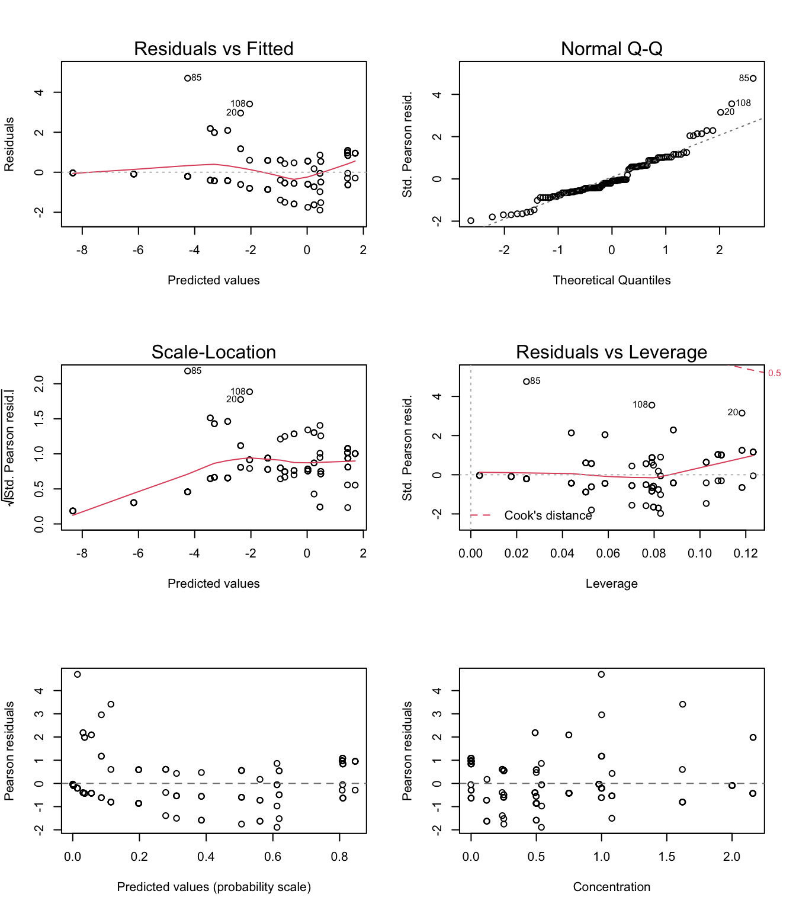
# Some trends in the residuals against concentration, suggesting that a straight
# line on the logit scale is not a perfect fit for these data. The model remains
# good enough for its purpose of evidencing differences in the toxicity between
# chemicals
9. Obtain the fitted values from the model on the scale of the response, and plot to aid model interpretation. How do you interpret the results?
MyData1<- data.frame(Concentration= seq(0, 2.16, length= 50), fToxic= "1")
MyData2<- data.frame(Concentration= seq(0, 2.16, length= 50), fToxic= "2")
MyData3<- data.frame(Concentration= seq(0, 2.16, length= 50), fToxic= "3")
MyData4<- data.frame(Concentration= seq(0, 2.16, length= 50), fToxic= "4")
P1<- predict(M1, newdata= MyData1, type= "response")
P2<- predict(M1, newdata= MyData2, type= "response")
P3<- predict(M1, newdata= MyData3, type= "response")
P4<- predict(M1, newdata= MyData4, type= "response")
par(mfrow= c(1, 1)) # restore default 1x1 window
# to plot the proportion surviving, use 1 - proportion that died:
plot(x= jitter(Mites$Concentration), y= jitter(1 - Mites$Proportion), pch= 16, col= Mites$Toxic)
lines(MyData1$Concentration, P1, col= 1, lty= 1)
lines(MyData2$Concentration, P2, col= 2, lty= 1)
lines(MyData3$Concentration, P3, col= 3, lty= 1)
lines(MyData4$Concentration, P4, col= 4, lty= 1)
legend("topright",
legend= c("1", "2", "3", "4"),
lty= 1,
col= c(1, 2, 3, 4), bty= "n")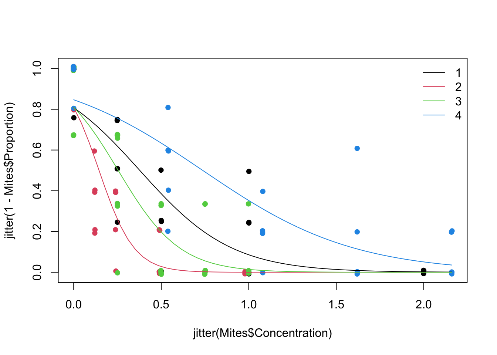
# All chemicals have a significant negative effect on the proportion of mites surviving, as their
# concentration increases (to ascertain this you could relevel in hindsight the least powerful chemical
# as the reference level, which will test whether its slope is significantly different from zero).
# The Chem with the highest toxicity at lower concentrations is fToxic 2, followed by fToxic 3, 1
# and 4 is the least potent.
Mites$fToxic_4AsRef<- relevel(Mites$fToxic, "4")
M2<- glm(cbind(Living_mites, Dead_mites) ~ Concentration + fToxic_4AsRef + Concentration : fToxic_4AsRef, family= binomial, data= Mites)
summary(M2)
##
## Call:
## glm(formula = cbind(Living_mites, Dead_mites) ~ Concentration +
## fToxic_4AsRef + Concentration:fToxic_4AsRef, family = binomial,
## data = Mites)
##
## Deviance Residuals:
## Min 1Q Median 3Q Max
## -2.0569 -0.5875 -0.1295 0.7435 2.6011
##
## Coefficients:
## Estimate Std. Error z value Pr(>|z|)
## (Intercept) 1.7087 0.4104 4.163 3.14e-05 ***
## Concentration -2.3183 0.4026 -5.758 8.52e-09 ***
## fToxic_4AsRef1 -0.2739 0.5848 -0.468 0.639594
## fToxic_4AsRef2 -0.2653 0.5727 -0.463 0.643213
## fToxic_4AsRef3 -0.2597 0.5828 -0.446 0.655886
## Concentration:fToxic_4AsRef1 -1.4828 0.9630 -1.540 0.123626
## Concentration:fToxic_4AsRef2 -7.6592 2.1524 -3.558 0.000373 ***
## Concentration:fToxic_4AsRef3 -3.3826 1.1189 -3.023 0.002502 **
## ---
## Signif. codes: 0 '***' 0.001 '**' 0.01 '*' 0.05 '.' 0.1 ' ' 1
##
## (Dispersion parameter for binomial family taken to be 1)
##
## Null deviance: 342.07 on 114 degrees of freedom
## Residual deviance: 117.67 on 107 degrees of freedom
## AIC: 231.43
##
## Number of Fisher Scoring iterations: 6
# Concentration -2.3183 0.4026 -5.758 8.52e-09 ***
# shows that the negative dose-effect relationship (slope for concentration) is significant
# even for Toxic 4
# Concentration:fToxic_4AsRef1 -1.4828 0.9630 -1.540 0.123626
# Concentration:fToxic_4AsRef2 -7.6592 2.1524 -3.558 0.000373 ***
# Concentration:fToxic_4AsRef3 -3.3826 1.1189 -3.023 0.002502 **
# these coefficients and their p-values show that only the dose-effect relationships of Toxics 2 and 3
# are significantly different from the dose-effect relationship of Toxic 4
10. (Optional) Include the 95 % CI on the plot above. You will need to obtain the fitted values and SE on the scale of the link function, calculate the CI and then back-transform.
# Sketch model fit with 95% confidence bands for Toxic 1
MyData1<- data.frame(Concentration= seq(0, 2.16, length= 50), fToxic= "1")
MyData2<- data.frame(Concentration= seq(0, 2.16, length= 50), fToxic= "2")
MyData3<- data.frame(Concentration= seq(0, 2.16, length= 50), fToxic= "3")
MyData4<- data.frame(Concentration= seq(0, 2.16, length= 50), fToxic= "4")
P1<- predict(M1, newdata= MyData1, type= "link", se= TRUE)
P2<- predict(M1, newdata= MyData2, type= "link", se= TRUE)
P3<- predict(M1, newdata= MyData3, type= "link", se= TRUE)
P4<- predict(M1, newdata= MyData4, type= "link", se= TRUE)
par(mfrow= c(1, 1)) # restore default 1x1 window
plot(x= jitter(Mites$Concentration, 10), y= jitter(1-Mites$Proportion, 2), pch= 16, col= Mites$Toxic)
G1<- exp(P1$fit) / (1 + exp(P1$fit))
G1.UP<- exp(P1$fit + 1.96 * P1$se.fit ) / (1 + exp(P1$fit + 1.96 * P1$se.fit))
G1.LO<- exp(P1$fit - 1.96 * P1$se.fit) / (1 + exp(P1$fit - 1.96 * P1$se.fit))
lines(MyData1$Concentration, G1, col= 1, lty= 1)
lines(MyData1$Concentration, G1.UP, col= 1, lty= 2)
lines(MyData1$Concentration, G1.LO, col= 1, lty= 2)
# repeat the example above for all 'Toxic' levels (gets a bit busy on the graph)
legend("topright",
legend= c("1", "2", "3", "4"),
lty= 1,
col= c(1, 2, 3, 4), bty= "n")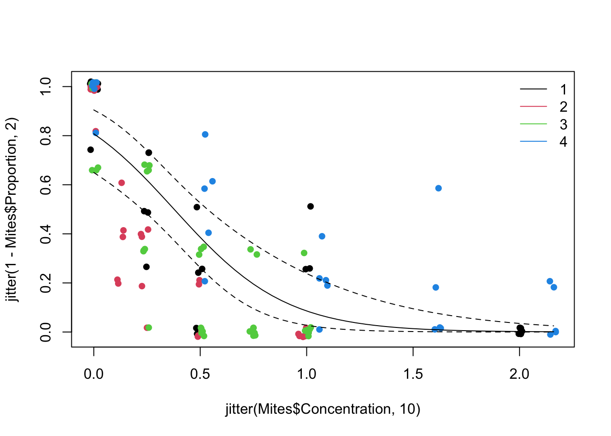
# Note how the confidence intervals are and should be asymmetrical on the response scale
# (they are symmetrical on the link scale), and the logit link effectively
# prevents them from going below 0 or above 1
End of the Binomial (Proportions) GLM - mites survival